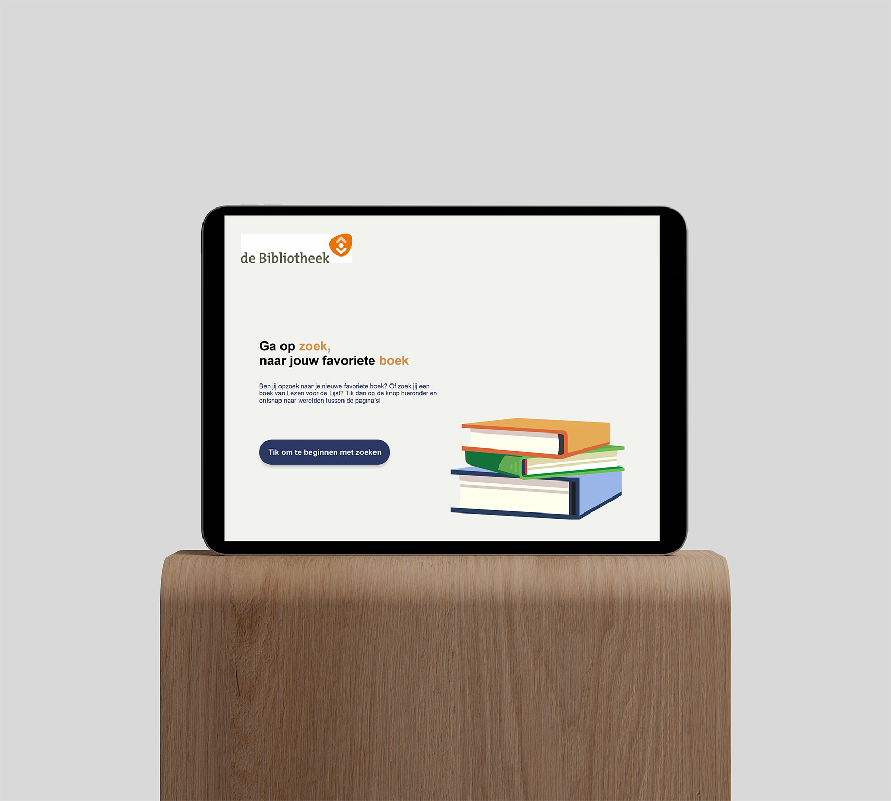

Visual Interface Design
De Boekenzoeker
Individuele opdracht
Periode van het vak: 5 weken
De opdracht
Werk voor de onderbouw van de middelbare school een interface ontwerp uit waarmee in de schoolbibliotheek op een iPad op eenvoudige wijze (door het aangeven van een aantal voorkeuren) een overzicht verkregen kan worden met voor hun aantrekkelijke boeken om te lezen!
De case
De Gemeente Amsterdam wil het lezen onder scholieren promoten. Vaak komen scholieren niet meer in de openbare bieb, dus is de enige plek waar ze zouden kunnen komen en boeken kunnen lezen is de schoolbieb. Om deze reden zijn in de schoolbieb naast informatieve boeken, ook steeds meer romans te vinden. De Stad wil middelbare scholieren helpen om makkelijk en snel leesboeken te zoeken in de schoolbieb. Dit willen ze doen met een kiosk-opstelling: een tablet (iPad) die vast bij de ingang van de bieb staat. Hierop draait een app die de scholier helpt een boek te vinden dat bij hem past en geeft aan waar hij of zij dat boek kan vinden.
Proces
De schermen zijn gemaakt op basis van visuele onderzoek. Zo zie je wat de doelgroep echt tegenwoordig aanspreekt.
Reflectie
In deze weken heb ik kunnen experimenteren met Adobe XD. Ik ben het meest trots op de animatie van de boeken die ik heb gemaakt met XD.